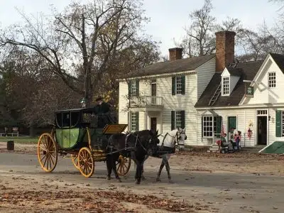

This resort is my Williamsburg Favorite and you will love it too.
Video by: Traveling With Jennifer Sparks Savoy
Day One Travel & Arrival At The Historic Powhatan Resort a Hilton Vacation Club
Today I’m happy I get to go back to one of my favorite resorts in the Williamsburg area The Historic Powhatan Resort, which is a Hilton Vacation Club now, has been a vacation destination for myself and my family for well over two decades. The location itself is at 3601 Ironbound Road Williamsburg Virginia, but that puts it very close to Route 55 and Route 5 is a road that will get you to Historic Jamestown the Colonial Parkway Colonial Williamsburg, and many other key locations in the area.
When you’re staying at the resort, you’re so close to all the historic things to do and see in Williamsburg, Jamestown, and Yorktown, but you also have access to Great amusement parks and amazing local golf.
When you arrive at the resort off Ironbound Road stop briefly at the security gate. Let them know that you’re checking in they’ll direct you to the main building to check in check in as a breeze especially when you booked through Tzort.
The resort itself offers everything from 1 to 4-bedroom suites and has great on-site pools both indoor and outdoor as well as several on-site restaurants. Over the years when my family came for these mini vacations. We often stayed in a 3 story unit that offered three bedrooms full kitchen an enclosed indoor private hot tub and several bathrooms. the layoffs kind of interesting that the ground floor of the unit for the three-bedroom you walk in the door on the right-hand side there is the kitchen, and it’s a good size kitchen we’re either way that you’re turning there’s a counter either in front of your above hind your dishwasher. An oven full-size refrigerator and plenty of cabinets with all the dishes in cookware that you would need to cook for your family. And over our many visits, over at least a two-decade. We had stayed at the same unit, which is fun because you feel like you get to know the place as a second home and that’s really neat when you’re coming to a resort that you’re so fond of. Cutting the kitchen in the layout of the dining area that’s just in front of the kitchen is very good to make meals while you can still socialize and interact with your family or group that you’re with.
If you come straight in the door and you don’t turn into the kitchen right in front of you is a small dining area and then after that, there is a large open living room area with a fireplace and TV on one side of the room and large sofas and seating on the other side of the room and then that room leads out onto a patio on one side and on the other side there is in one or two entries into a hot tub area in the hot tub is actually in closed all and attach to this 3 bedroom suite. also on that same ground floor, you have the master bedroom which links not only to the bathroom in the hot tub on either end of the bedroom but has a very sizable king-size bed and a good layout including generous closet space considering that this is a vacation resort.
A quick step up the stairs they’re all so close to that same front door that you entered in a kind of on a diagonal from the kitchen and you go up to another landing area and in that landing area there’s like another living room type set up but it’s open to the area below and then to the left of that at the top of the stairs there is the other master bedroom and then behind you once you come up the stairs you turn to the right you’ll see another set of stairs going up to the third floor and to the left of those stairs is a full laundry room. returning go up the stairs you find that there is a loft The Loft has two twin beds and is laid out very well, especially for older teens or single individuals to sleep and rest it too was also open to the area below so communicating with the children that are staying up there were the guests that are staying up there.
Villa Amenities
-
Balcony/Porch
-
Blender
-
Cable TV
-
Coffee Maker
-
Dishwasher
-
Ice Maker
-
Microwave
-
Oven
-
Refrigerator
-
Stove/Range
Then the resort itself offers all of these options.
Resort Amenities
-
Free WiFi
-
Outdoor Pools
-
On-Site Restaurants
-
Fitness Center
-
Concierge Services
Recent Reviews
The rooms are very spacious with plenty of comfortable amenities like a soaking tub, a walk-in shower, and small washer, and a dryer. The resort amenities are fun with a nice outdoor and indoor pool area, mini golf, and several playgrounds, including adult-only areas. It’s nice for families. We had a few small problems (fire alarm from the downstairs guest burning food in their kitchen, and our door lock had to be replaced on the second day). Otherwise, it was lovely. The staff was always friendly and prompt.
The resort is really beautiful, lovely landscape. The rooms are spacious, comfortable, and well-lit because of the sun’s roofs. Our villa has a clean full kitchen, living room with a fireplace, den, patio, 1 bedroom, walk-in closet, and a bathroom. The bathroom feels a bit, but that’s just how I feel.
There are two doors to reach the room, quite effective for keeping bugs away (during summer) and a cold wind (during winter). The staff was friendly too. In the pool area, they have a heated jacuzzi. There’s a kid’s playground down the road for those traveling with children. There are a lot of bugs but that’s expected during the summer in Virginia.
The only drawback was the steps. The Master bedroom and bath are very nice. The kitchenette and small dining room connect, but the living room is up another flight of stairs and a little cramped. Quiet rooms, excellent ac, and the washer and dryer combo were very convenient. Wonderful for young and healthy. If you are older or don’t handle stairs well, request a first-floor stay.
We loved our unit; 2 bedroom suite. It had everything you could need or want. Very spacious and clean. The only negative was that there is a resort fee and limited parking. Only one assigned space per unit. I was not aware of the fee until I checked in.
Definitely will be staying again.
This is a very large resort, so you have some of the resort kind of on either side of the main road and the main pool and building through the central part of the resort. On the right-hand side, you’ll find the buildings that offer 1 bedroom suites and two-bedroom suites for the most part. And then on the left-hand side of the central part of the resort, you’ll find the larger three and four-bedroom suites that are socially like full-size connected condos in central buildings or townhouses.
Once you check in and move everything into your unit like your bags your groceries and your goodies for your trip and get everybody settled, you can either start to check the temperature of the hot tub and get ready to jump in or you can head to the community pool or if it’s close enough to your dinner time, you could go to one of the restaurants on site.
While staying here at the Historic Powhatan, at Hilton Vacation Club, you do have a lot of choices for local restaurants that offer great food, and most have great prices. Unlike many places that serve tourists. I’m always impressed with the fact the local restaurant tours in the area do not overcharge. like any town or area, there are few pricey restaurants but most are very affordable and family-friendly.
Day Two History
More than likely if you’re coming to Williamsburg, part of your trip may be related to the history of the area. If this is your first visit you may want to start with nearby Jamestown and the Jamestown Museum so that you’re starting where the local history and the history of the United States started itself with the Jamestown Colony. After the Jamestown Colony either the same day or the following day whatever works out for your schedule, you can then go to Colonial Williamsburg end see part of the founding City in the capital itself well, in the area also make time to go to Yorktown to see where the Revolutionary War was won, see the local battlefields visit the museums and learn much more first-hand about those amazing Americans that helped win our independence from England.
I grew up in the area living most of my childhood in Yorktown Virginia how many times a year I would go down to the battlefields just to walk the battlefields or go down to the very nearby Yorktown Beach and actually play and have fun on the beach? but the museums in the area are some of the best in the world and they’re actually cited in historic locations. so when you’re studying and learning about the Revolutionary War, you’re doing so on the actual grounds on which several of the battles were fought. When you were visiting Jamestown is an example. You’re also on a very similar Waterway. It is close to the original site of where the Jamestown Colony. it is evil. Replicas of the church and some of the founding buildings in Jamestown in the Jamestown Fort itself.
I really enjoy all three of these historic sites, but for different reasons. Colonial Williamsburg is interesting because you get access to these historic sites, including the governor’s mansion and many places where actors are actually acting out the trade early Craftsman right in the original buildings are restored buildings. Then, of course, you have the Cobblestone Road through Colonial Williamsburg and all the shops and all the historic landmarks that you can visit all right there in one location. But the draw to me is different for the Jamestown Settlement Museum because you get a really in-depth understanding of the lives and activities of those that were a part of the Jamestown Settlement. But in Jamestown, you also get access to some really well-done coverage of the lives of the local Indians, and of course, it goes into a lot of the comment historic themes of how the local Indians including Pocahontas and James Smith interacted during those early foundational Days of our nation. Then once I Twilight Jamestown you can also learn how the Indians made Dugout canoes as well as see a ship Builder actually building local boats from local wood sources that were the same type of building methods used for the ships that brought over the settlers for the Jamestown Settlement itself. Also at Jamestown, you can visit the recreated church and Main buildings of the settlement itself and interact with guides and historians who function as actors that also take you through and explain the various buildings and the lives of those early settlers.
When you visit Yorktown and the various smaYorktown museums, it’s a completely different feeling because you’re on the actual battlegrounds and in the area where the Revolutionary War took place, there are really good films exhibits that explain in detail what the fighting was like what occurred there on the site and many of the different battles and conflicts that the Revolutionary Heroes had to struggle through in order to gain their independence. So the Yorktown battlefields and museums have a different feeling because the focus is more on the war and the path to Independence but also while you are there you can visit Yorktown Beach which is a nice ll Beach it’s right in front of that historic area just within walking distance.
Day Three Busch Gardens
While you’re staying at the Powhatan Plantation if you are with the family and could afford to do so, most visitors prefer to go to Busch Gardens while they are here. Busch Gardens is a giant theme park that is built in themed in kind of large oval a large circle with many countries being represented and a little Village all around that Circle so as you come into the park and start to walk from one area to the next you get to experience different architecture and cultures from around most of Europe. It makes the park really special and unique because of how it’s themed and how all the rides and entertainment and food follow that pattern and it makes for a very fun layout for a park. having grown up in the area, I’ve had the pleasure of going to Busch Gardens probably over a hundred times in my lifetime. I also spent one summer working there as a child and I worked in the kitchens of Italy and got to see behind the scenes quite literally how the sausage is made and preparing the meals in that nation of Italy.
Know before you go that Busch Gardens has some options that make it easy to get around, but it does involve a good deal of walking, and some of that walking will be uphill and downhill. so if you are taking the grandparents with you or if you have someone who has special needs, keep in mind that there will be a good deal of walking and some of that will be inclined or declined. now there are options to decrease the amount of walking that you have to do there is a train that goes around most of the park and you can get off at several spots so you can get on that train from one of the train stations and take it to the next area and do that 4 * see the 3 or 4 times throughout the park itself and that does make things easier. If you remember your party does you not want to walk a great deal but you are mobile enough, you can also use the Skylift which will take you from one section of a park to the other and you could get on the first Sky Lift or chairlift right after you enter the park if you enter the park you’ll see that you come into the country of England and if you go off to the right to head out of the park and start walking on the walkway on your left is one of the first Sky lives or chair lifts and that cheerless will take you all the way across the park to France from where you are in England.
if you’re okay with walking though you can walk the circumference of this park probably in an hour or less as long as you’re okay with those walking points where you got kind of steep inclines or declines. just like any other Circle you can go either direction you like most people go to the right and go on the natural course around that Circle but you could go in the opposite direction as well and sometimes it’s a good choice if the park is particularly busy that day.
add Busch Gardens. You’ll find many major roller coasters but they also have quite a number of smaller rides for those who aren’t roller coaster fanatics. The park also does an excellent job of providing many shows with incredibly talented dancers and singers. end throughout the park, you will find great food that is themed for the nation that you’re in. one of the most popular locations to eat, drink and be merry is the Fest house in Germany. Here you will find many draft beers as well as German meals in German desserts. the fast house itself is a giant-scale dining and entertainment venue where you can come in and sit at very large picnic-style tables together in an air-conditioned building around the central building there is a stage where live music and bands play.
just outside of the Fest house itself you will find local carnival games which are always fun for the kids to play or for the dad to try to win the kid’s surprises but just going to plan your trip here strategically because you don’t want to win a large prize and then have to carry it around for the second half of your day. so if you come to the Fest house to eat for lunch or for an early dinner and the kids see the games let them know that you’ll come back to the games and you’ll play in a little while and you can take them right around the corner from the games and the right bumper cars and ride some other smaller rides and that works as a great discredit distraction from those carnival games for the kids for a while.
Not far from Germany in the Gasthaus area, you can go over to Italy Italy has more small rides and they also have a large water ride and a very large coaster. the coaster that you’re fine here though is not for the faint of heart it’s called Apollo’s Chariot and it has quite a drop if you go into Little Italy from the main part of Italy you can actually go close to one of the water rides and look at the drop-in watch people ride that coaster over that Giant Drop. I am not much of a roller coaster ride anyway but once I saw that drop I knew that I would never be going on Apollo’s Chariot. but in the Little Italy area and Italy itself there are many rides that I will ride and enjoy that are smaller rides that cycle pretty quickly so even if there’s a bit of a line you really don’t have to wait for those rides long. There are also two large water rides in the area one is an indoor Flume-like ride that has dancing fire in many things going on around you in a theme setting and then a large drop at the end and the other is a Roman Rapids experience that goes through a large water weigh and has water coming down on you and it’s almost like a ride on a natural rapid through jungles and surrounding Forest fauna.
Another neat thing about many of these countries that you can visit throughout the park is the opportunity to take some really neat photos and have some great selfies or family photos that you can take with your phones in unique settings. what are the opportunities you’ll find off to the left as you’re heading from Italy to Little Italy is a large winemaking that where you go in and you act out the Stomping of the grapes and it makes for wonderful photos and gives you a good opportunity to take that family shot while you’re on vacation.
Another amazing thing about Busch Gardens is the live entertainment. Not only do they have several shows every season but they also welcome Live musical acts from National groups and individual talent. Over the many years in my visits, I’ve enjoyed many live Acts from all different types of musical backgrounds and you can get up close and personal with some of the seating being just 10 feet or fewer from the stage.
If you like theme park rides entertainment music and unique food, this is an amazing Park and a great experience for the entire family really, Busch Gardens. There’s something for everyone to see it a joy. If you were here in the area close to the Christmas holiday season one thing that you may want to make sure to check out is Christmas Town. this is when Busch Gardens becomes an entire Christmas experience for that area of England that you enter in the first two and Germany all become Christmas-themed and they really do an excellent job. Busch Gardens, that self has changed hands from the Anheuser-Busch company to the company that now owns all the Busch Gardens amusement parks or theme parks. I was at Christmas Town for their very first year with my family and joy did a great deal in the evening years since it is only gotten better and better every single season. if you get the opportunity to experience it, not only is it a good buffet-style meal but you get some almost 101 times with Santa Claus and Mrs. Claus for your child and it gives you the opportunity to take photos of videos of that experience and its unique if they’re the right age and still are big fans of Santa and Christmas time fun.
Stay here and book via Tzort for the travel vacation win.
Book Your Next Vacation
More Posts
The Historic Powhatan Resort a Hilton Vacation Club
This resort is my Williamsburg Favorite and you will love it too. Video by Traveling With Jennifer Sparks Savoy Day One Travel & Arrival At
Read More
Oceanaire a Hilton Vacation Club
This resort is right on the beach and in a prime location at Virginia Beach. You can choose 1, 2, or 3-bedroom villas here and
Read MoreOcean Beach Club a Hilton Vacation Club
This resort and club not only offers the best of Virginia Beach, but it also gives you local access to the Hampton Roads area.
Read More